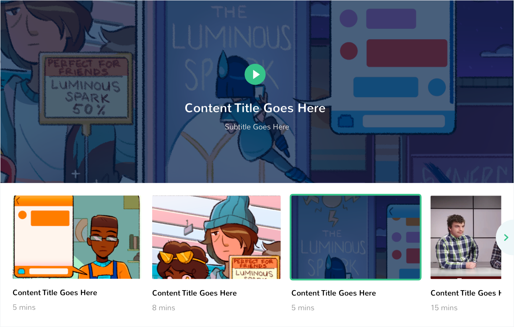
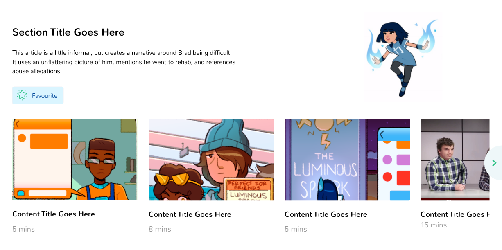
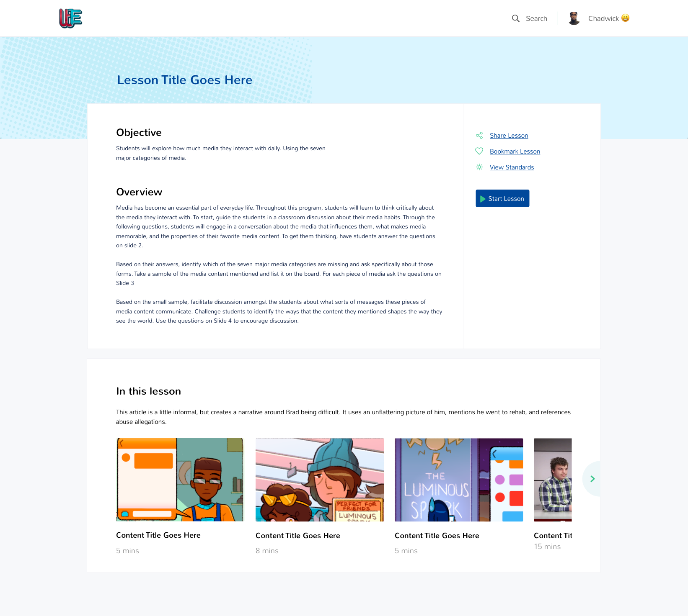
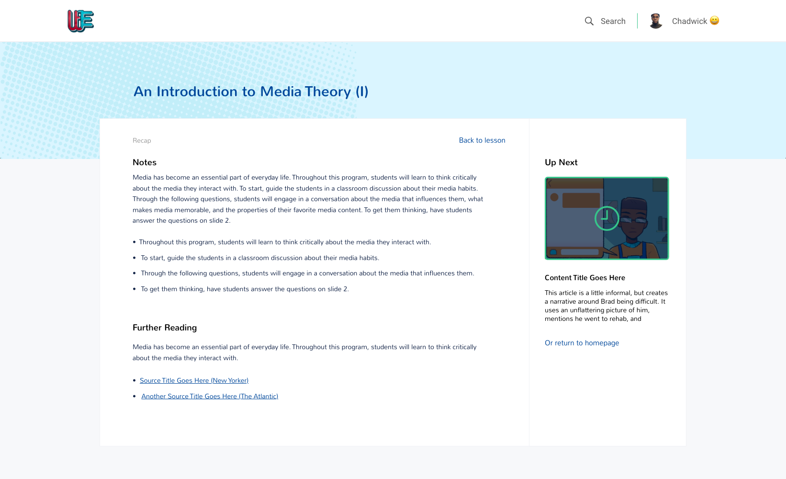

Weird Enough Productions is a comic company building a new world of stories that will change the one we live in. In this project the team designed GET Media L.I.T. a platform that uses media literacy, digital literacy, and student voices to awaken the hero in every classroom.
Weird Enough Productions
Product Designer
April 2018 - October 2018
To design a learning platform that presents various media content types to students and teachers, and facilitate engagement with the content. Platform will be used in different contexts include use on a personal computer, and projected in a classroom for in-class activities.
"As long as you pursue your personal truth, you’re not too weird. You’re just weird enough"
I remember Tony say at this at the very first kick-off meeting on this project. That sentence summarises the company’s ethos and served as a guiding principle for the entire design process. We wanted to build a platform that helped students discover new content and teachers facilitate learning around these pieces of content. To do this, in collaboration with a UX researcher, we drew user flows to get a better sense of the information architecture and through several rounds of wireframes decided on the layout of the platform.
Above is an image of selected screens on the platform and shots from the iterative prototyping phases.
1. Content discovery:
One of our main objectives was to effectively surface relevant content to users as the Weird Enough library (comics, videos, newspaper clippings, etc.) grows larger. We iterated through many different options and decided to tag each content piece with the related school subject. Next, we decided to curate playlists that bundled content around a theme. The third level was to allow users (mainly teachers) subscribe to these playlists and create playlists of their own as they prepared for lessons. Students would then be able to follow and learn along. This was important because initial research showed for the platform should be built around content.
Above is an image of a section of the content library.
Above is an image of a sample curated playlist.
2. Meeting Learning Objectives:
If we successfully created relevant content, presented it clearly and made discovery efficient, learning will likely become fun and enjoyable. But the bigger question was "How does fun translate to actual learning?". We needed to structure lessons around optimising for learning. Because the platform will plug in to classrooms in the school district, our starting point was to align lessons to Learning Standards. Exploring this challenge brought about two new additions to the flow: the Lesson Overview page and the Recap page. These will help to prep learners to pick up learning goals as they go through the content pieces in the lesson, and further explore the issues encountered, respectively.
Above is an image of the lesson overview screen.
Above is an image of the recap screen.
Working on this project was challenging but especially interesting because I had the opportunity to work with a small distributed team, collaborating with the UX researcher, product owner and lead engineer to explore different directions and evaluate the pros and cons of each decision.